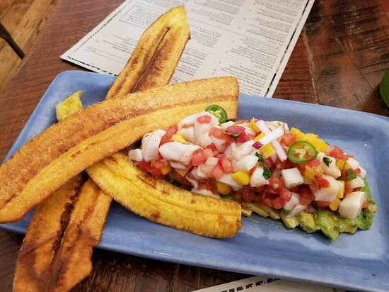
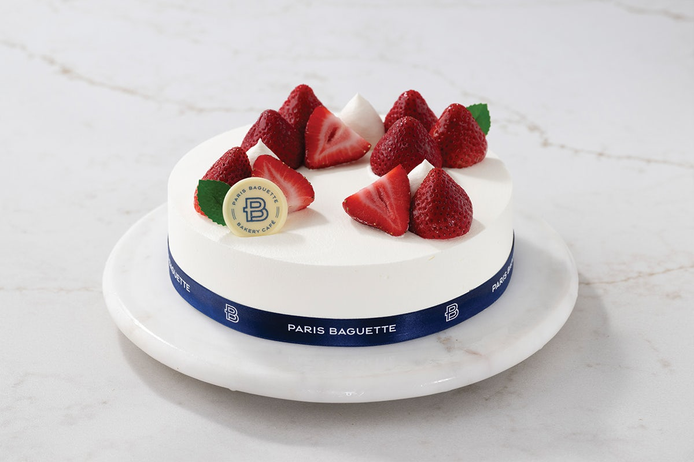
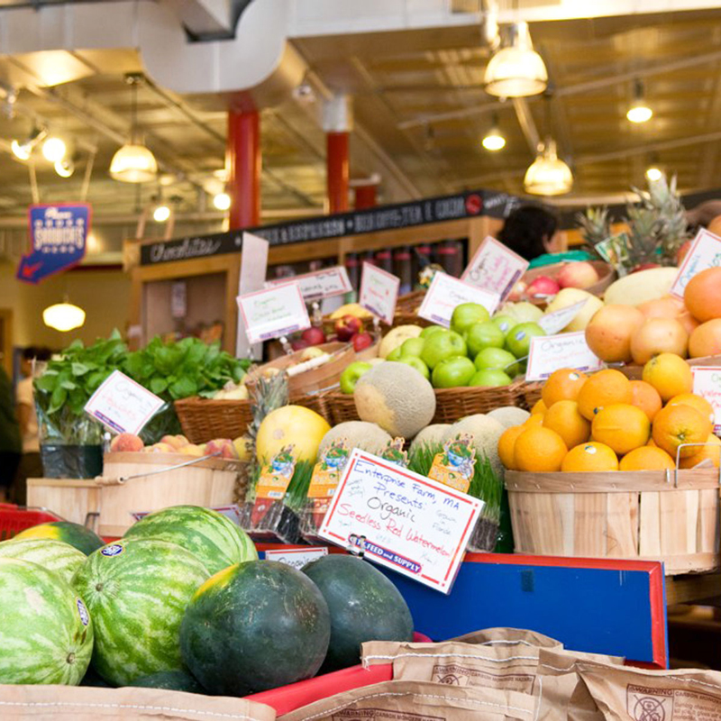

Naomi's First Website
Hello everyone! I am going to share a few of my favorite food spots.
- Giordano's
- Sayulita
- Paris Baguette
- Cityfeed
Giordano's
Giordano’s in Chicago is famous for its legendary stuffed deep-dish pizza, layered with rich cheese, savory sauce, and a flaky, buttery crust. The warm, casual atmosphere makes it a go-to spot for locals and visitors craving an authentic taste of Chicago-style pizza.
Best deep dish in Chicago

Sayulita
Sayulita in Glastonbury, CT, is a vibrant Mexican restaurant inspired by the coastal flavors and laid-back vibe of its namesake town in Mexico. It offers creative tacos, fresh margaritas, and a lively atmosphere perfect for social dining and celebrations.
Must try the whole menu, Drinks are amazing too
Paris Baguette
Paris Baguette in Boston is a charming bakery café offering freshly baked pastries, artisan breads, and signature cakes with a French-inspired twist. Guests can enjoy coffee, sandwiches, and sweet treats in a cozy, modern setting perfect for a quick bite or a relaxing break. Whenever I go I get the Strawberry soft cream cake.
Most delicious cake
City Feed
City Feed and Supply in Jamaica Plain, Boston, is a cozy neighborhood café and market known for its locally sourced sandwiches, coffee, and groceries. With a warm, community-focused vibe, it’s a favorite spot for fresh, organic eats and friendly conversation.
My number one go to for organic coffee and local organic food & snacks

I hope you enjoyed the information I shared as much as I liked creating this for you. Enjoy!